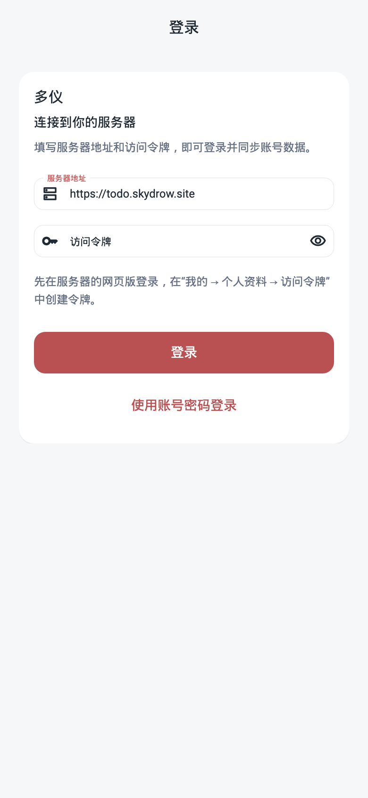
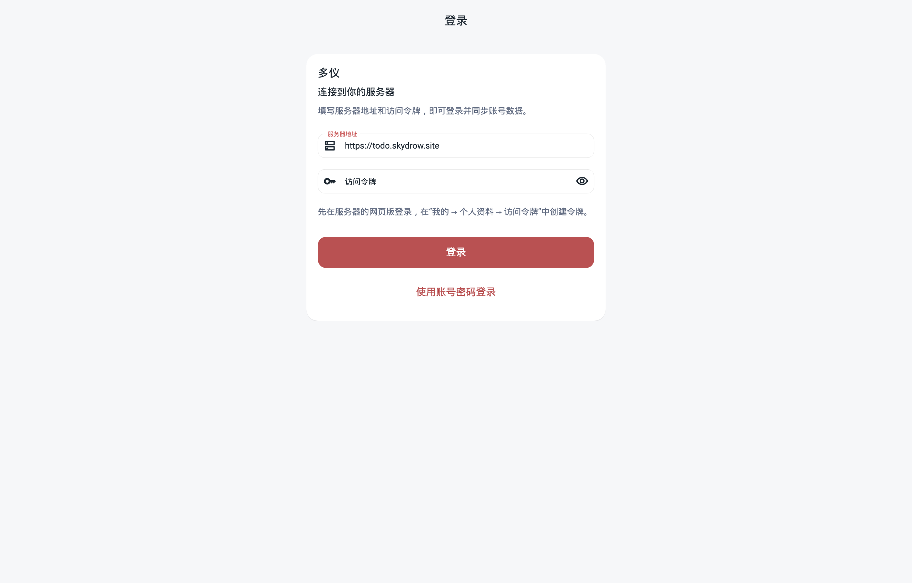
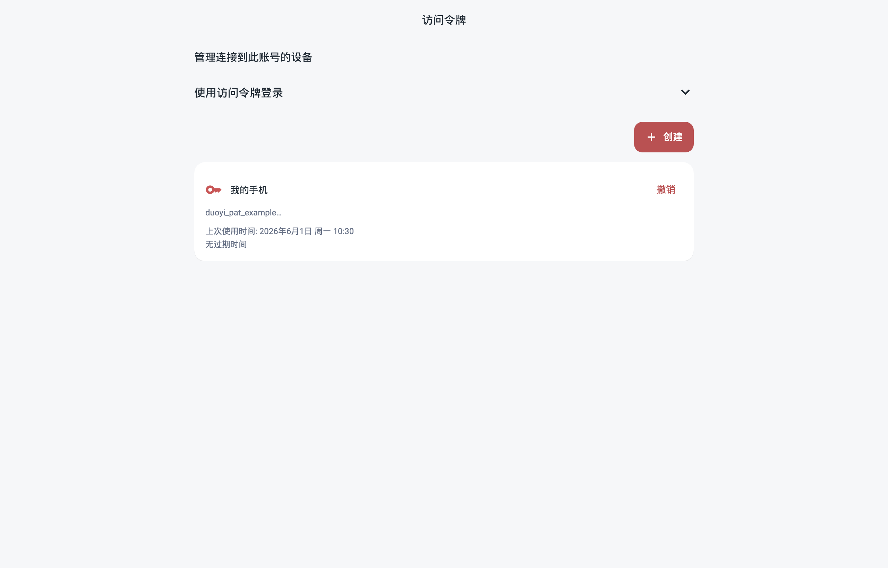

<!doctype html>
<html lang="zh-CN"><meta charset="utf-8"><meta name="viewport" content="width=device-width, initial-scale=1"><title>服务器与访问令牌 · 界面验证</title>
<style>body{margin:0;padding:32px;background:#edf0f4;color:#1f2933;font:15px/1.6 system-ui,sans-serif}main{max-width:1360px;margin:auto}h1{font-size:22px;font-weight:400}h2{font-size:16px;font-weight:400}figure{margin:24px 0}img{display:block;max-width:100%;height:auto;border:1px solid #d9e0e8}.phone{max-width:390px}a{color:#a94444}p{color:#667085}</style>
<main><h1>服务器地址与访问令牌</h1><p>Flutter 实际组件渲染；使用示例账号元数据，无有效令牌。手机 390 × 844，桌面 1280 × 820。</p><figure><h2>安装端登录 · 手机</h2><a href="token-login-mobile.png"></a></figure><figure><h2>安装端登录 · 桌面</h2><a href="token-login-desktop.png"></a></figure><figure><h2>访问令牌管理</h2><a href="token-manager.png"></a></figure></main></html>
